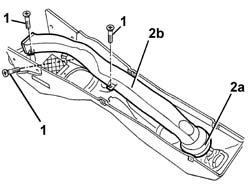

5010B46 central air duct to rear seat - arrange
- Path
- Procedures > 50 AUXILIARY UNITS > 5010 CLIMATE CONTROL - MISCELLANEOUS > 5010B heating/ventilation air pipes and ducts > 5010B46 central air duct to rear seat - arrange
- Kind
- repair procedure (removal / refitting; the operation number is the code)
- Applies to
- all engines; all production periods
- Interactive page
- https://sloeber94.github.io/elrnDB-a147/en/#/3025387
Applies to: all engines; all production periods
 Removing
Removing
 Refitting
Refitting1. Working at the bench, inside the tunnel cover, undo the bolts fixing the centre air duct to the rear seats.
2. Remove the air duct (2a), releasing it from the vent (2b).

Applies to: all engines; all production periods
Refitting
RemovingCheck that the centre air duct to the rear seats is not damaged.
Position the duct, fitting it to the vent.
Tighten the screws.